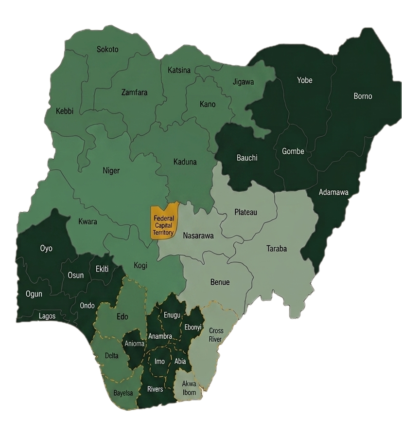

We, the peoples of the Federal Republic of Nigeria, recognizing the diversity of our civilizations, ethnicities, cultures, languages, religions, and historical experiences, hereby establish a new constitutional order.
This order is founded upon regional balance, accountable governance, measurable public administration, economic decentralization, institutional continuity, national sovereignty, and competitive federal development. This framework is not merely a legal document — it is a covenant between the state and its peoples, binding governance to performance, binding power to accountability, and binding unity to the recognition of diversity.
Nigeria's federalism has, historically, tilted toward over-centralization — concentrating power and revenue at the federal level while leaving regions with limited capacity to develop autonomously. The constitutional framework proposed herein corrects this imbalance through a restructured federation in which the Federal Government retains its sovereign functions while regions acquire genuine economic, administrative, and developmental autonomy.
The Federal Republic of Nigeria shall consist of eight constitutional regions and the Federal Capital Territory (Abuja), which shall serve as the seat of the Federal Government. Each region groups geographically contiguous states with shared socioeconomic and cultural characteristics, forming a unit capable of autonomous governance and development.

Note: Map is schematic and illustrative. The FCT (Abuja) shall remain under direct federal administration and shall not belong to any constitutional region.
The constitutional division of powers between the Federal Government and the regions shall be clearly delineated, justiciable, and protected from encroachment by either level of government. The Federal Government retains exclusive sovereign functions, while regions exercise substantial autonomous authority over domestic affairs.
Where any ambiguity exists as to whether a matter falls within federal or regional jurisdiction, the Constitutional Supreme Court shall adjudicate based on the principle of subsidiarity — that governance should occur at the closest practicable level to the citizen.
The federation shall operate a decentralized fiscal structure in which regions and states retain the majority of internally generated revenue and natural resource revenue. This corrects the historic dysfunction of excessive centralization, wherein the Federal Government has long controlled the majority of national revenue while regions remained fiscally dependent and developmentally constrained.
The Federal Government shall maintain constitutionally protected access to strategic national revenue streams including customs duties, defense levies, portions of corporate taxation, aviation fees, maritime duties, federal infrastructure bonds, and national security appropriations. These sources shall remain inalienable from federal jurisdiction.
Regions and states may independently manage land taxes, sales taxes, resource royalties, local industrial taxes, business registration revenue, and internally generated taxation mechanisms consistent with constitutional law. Regions shall retain the majority of natural resource revenues extracted from their territory.
At least 50% of revenues derived from natural resources — including petroleum, gas, solid minerals, and agricultural commodities — shall be returned to the region of origin as derivation revenue. The remaining portion shall flow into the Federal Distribution Pool and be allocated by the Revenue Mobilization Allocation and Fiscal Commission (RMAFC) according to constitutionally established formulae. No derivation percentage shall be reduced without a constitutional amendment approved by the Council of Regions.
The Presidency shall rotate sequentially among the eight constitutional regions. This mechanism ensures that no single region or ethnoreligious bloc can permanently dominate the federal executive. It also incentivizes regions to invest in the quality of their governance, knowing their citizens will ascend to the highest office in turn.
After the eighth region completes its turn, the rotation shall restart from Region 1. This sequence shall be immutable except by a supermajority constitutional amendment requiring approval of at least six of the eight regions and a two-thirds majority in both chambers. The rotation order shall be publicly recorded in a Constitutional Rotation Register maintained by the Constitutional Supreme Court and published in the Federal Gazette at the commencement of each electoral cycle.
To stand as a presidential candidate in a rotation election, an individual must satisfy all of the following conditions simultaneously:
Eligibility shall be determined and certified by INEC in conjunction with the Constitutional Supreme Court. No candidate may be admitted to the ballot without dual certification from both institutions.
Because candidacy is restricted to the rotation region, both domicile and ancestral ties must be constitutionally precise to prevent gaming:
The Constitution must provide an unambiguous mechanism for every foreseeable failure scenario:
INEC declares a Regional Candidacy Emergency. A Special Eligibility Review Panel convenes within 14 days. If modest constitutional relaxation (e.g. domicile reduced to 3 years) yields a candidate, election proceeds. If not, the Constitutional Supreme Court declares Rotation Suspension and the adjacent region provides candidates for that cycle. The suspended region retains its position in the sequence.
INEC re-opens a 30-day emergency nomination window within the eligible region. If this window yields no viable candidate, Rotation Suspension protocol applies and the election opens to the adjacent region as above.
The Vice President (also from the rotation region) assumes the Presidency. If the VP is also incapacitated, the Speaker serves as Acting President for up to 90 days, during which a Special Election is held within the rotation region. A partial term under two years does not count as a full term for re-election purposes. The rotation sequence is unaffected.
The Constitutional Supreme Court issues a compliance order within 7 days. Non-compliance constitutes a constitutional crisis. The Federal Legislature may by a two-thirds majority in both chambers authorise INEC to conduct direct federal nomination proceedings within the obstruction region, bypassing regional party structures for that cycle. Orchestrators face permanent disqualification from federal office.
At the beginning of each administration, measurable governance KPIs shall be constitutionally established, independently verified, and publicly reported. This mechanism transforms governance from a political promise system into an accountable performance contract between the President and the Nigerian people. Failure to achieve minimum benchmarks is not merely a political failing — it is a constitutional disqualifier for re-election.
| KPI Domain | Example Benchmark | Verification Body | Review Cycle |
|---|---|---|---|
| Security | Reduction in insurgency incidents, improved border security metrics | INVA + Defence Intelligence | Quarterly |
| Infrastructure | Km of roads completed, power generation capacity added | INVA + National Infrastructure Commission | Quarterly |
| Healthcare | Maternal mortality rate, immunization coverage, hospital bed ratios | INVA + Ministry of Health Audit | Bi-annual |
| Economy | GDP growth rate, unemployment rate, inflation targets | INVA + National Statistics Commission | Quarterly |
| Energy | % of households with reliable electricity access | INVA + Energy Regulatory Commission | Bi-annual |
| Anti-Corruption | Transparency International score improvement, prosecutions secured | INVA + ICPC + EFCC | Annual |
| Education | Literacy rates, school enrollment ratios, tertiary completion | INVA + National Education Commission | Annual |
| Digitisation | % of federal services accessible online, broadband penetration | INVA + Digital Economy Commission | Annual |
A constitutionally protected INVA shall audit all federal performance metrics, verify infrastructure completion, validate national statistics, monitor procurement integrity, and publish quarterly governance reports. The INVA shall be independent of the Executive, Legislature, and all political parties, and shall report directly to the Constitutional Supreme Court. Its findings are legally binding on re-election eligibility determinations.
All policing and law enforcement institutions shall remain exclusively federal in authority, command, recruitment standards, intelligence coordination, and operational oversight. This is a foundational constitutional commitment — not merely administrative policy — grounded in Nigeria's specific history of regional militarization, political manipulation of armed forces, and the dangers of interstate security competition.
The experience of regional and state police structures in federal systems around the world, and in Nigeria's own past, demonstrates that decentralized armed authority creates dangerous incentives: governors weaponize police against political opponents; regional armies form the nucleus of secessionist forces; ethnic militias gain quasi-official status. Nigeria's unity depends on a single, professionally neutral, nationally accountable law enforcement structure.
While armed policing authority remains exclusively federal, the Constitution permits Community Policing Advisory Boards (CPABs) to be established at local government level. These boards advise the regional NPF operational commands on community-specific security needs, assist in intelligence gathering, and facilitate civilian-police cooperation. CPABs possess no executive authority, carry no arms, and cannot issue orders to NPF officers.
A constitutionally established Police Service Commission shall oversee all NPF appointments above the rank of Assistant Superintendent, ensure merit-based promotion, investigate misconduct, and publish annual institutional performance reports. The KPI governance system shall include specific police modernization and accountability benchmarks within its quarterly review cycle.
The legislative authority of the Federal Republic of Nigeria shall be vested in a bicameral Federal Legislature. The two-chamber design resolves the fundamental tension in all diverse federations: how to ensure both democratic proportionality and the protection of smaller constituent units from domination by larger ones.
The Federal Legislature shall operate upon the constitutional principle that population deserves representation, regions deserve protection, and neither majority dominance nor regional obstruction shall undermine the stability of the federation. The bicameral structure exists to balance democracy, federalism, accountability, and national cohesion within a diverse multinational republic.
The judicial authority of the Federal Republic shall be vested in an independent constitutional judiciary that serves as the ultimate guardian of the constitutional order — a permanent institutional check on the Executive, the Legislature, and regional governments alike.
Judges shall be appointed through a multi-layer process involving the independent National Judicial Commission (NJC), merit review panels, regional participation, public transparency hearings, and confirmation by the Council of Regions. No single region may dominate the upper judiciary. Political party executives and active partisan officials are ineligible for immediate judicial appointment.
National statistics and census data are constitutionally protected matters of sovereign importance. Nigeria's past census exercises have been marred by manipulation, political pressure, and disputed results. The new constitutional order places national data integrity under independent, multi-source, cross-verified oversight — because accurate data underpins every governance function, from revenue allocation to electoral boundary delimitation.
Census and demographic data shall be cross-verified through at least six independent data streams to prevent manipulation of any single source:
A constitutionally independent National Statistics Commission shall manage, audit, and publish all national data. Any public official who manipulates census or statistical data shall face criminal prosecution and permanent disqualification from public office.
Citizens shall possess constitutional rights to access public budgets, procurement records, benchmark reports, audit findings, infrastructure verification records, and federal performance dashboards. Transparency is not a policy preference — it is a constitutional right enforceable through the judiciary.
All federal and regional budgets, expenditure reports, and procurement awards published in real time on a publicly accessible digital portal.
Quarterly INVA governance reports published within 30 days of each review period. Citizens may challenge data through an independent ombudsman.
Infrastructure completion status, contractor details, and cost data publicly accessible. INVA verification reports published for all major federal projects.
All court rulings, constitutional opinions, and major hearings digitally archived and publicly accessible except in matters of national security.
All legislative proceedings recorded, voting records of legislators made public, and committee reports published within 14 days of conclusion.
Asset declarations of all senior officials, EFCC and ICPC case summaries, and procurement fraud findings published annually.
Regions shall possess authority to attract investment, establish innovation zones, pursue regional economic specialization, and compete economically within the federation under constitutional protections. This competitive federalism model treats regions as economic actors — incentivizing governance quality, investment climate improvement, and development — rather than passive recipients of federal allocations.
No region may erect internal trade barriers, tax interstate commerce between regions, or use regional policy to disadvantage businesses from other regions of the federation. The Constitutional Supreme Court may strike down regional economic policies that constitute anti-competitive discrimination against citizens or enterprises of other regions.
The restructuring process shall occur gradually over a 10–20 year transition period with phased revenue decentralization, institutional reorganization, debt stabilization planning, and national transition safeguards. No constitutional transformation of this magnitude can succeed if implemented overnight — sequencing and stability management are themselves constitutional obligations.
Constitutional ratification. Regional governance structures established. INVA, NJC, and INEC reformed and constitutionally entrenched. Revenue split at 65/35. First rotation election held.
Regional capacity building. KPI system fully operational. Judicial reform implementation. Revenue split moves to 70/30. Second and third rotation cycles completed.
Full regional fiscal autonomy. Revenue split at 75/25. Constitutional review process opens to assess performance. All transition commissions dissolved or absorbed into permanent institutions.